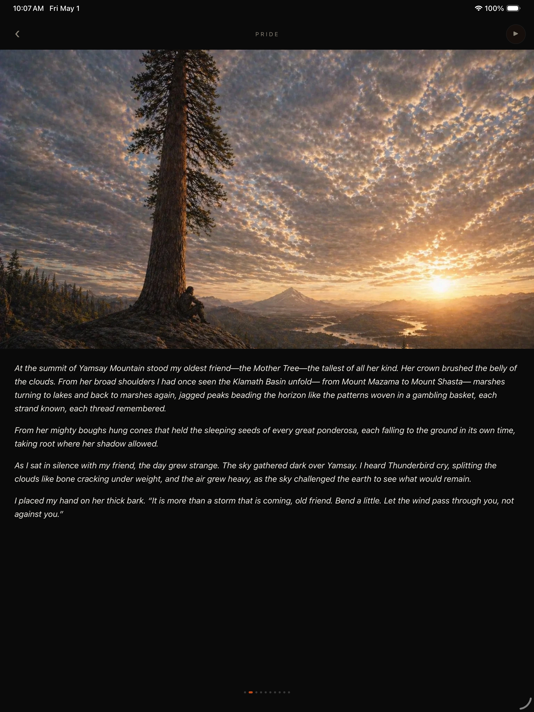

◈
Origin of the Maklaks
The twelve origin myths of the Klamath Basin, told as Kemush — the creator-deity who pushed back against the first Darkness — saw them. From before the world had shape, through the rise of Mazama, the wandering of giants, the birth of Death and the Maklak people, to the spiral of Memory at the threshold of time.

This is The Book of Spirals by H. L. Delaney, mapped panel by panel onto an obsidian-and-ember reader app. Every word is taken verbatim from the published book. Every panel is a still image, a moment held under prose.
There is no game. No quizzes, no choices, no puzzles, no points. The app is a way to read the book — quietly, at your own pace, on your own device, with nothing in your way.
H. L. Delaney writes literary fiction and mythic realism rooted in the landscapes, histories, and memory traditions of the Klamath Basin. A member of the Klamath Confederated Tribes, his work has received national recognition, including the Calvino and Princemere Prizes.
Delaney lives in the shadow of Crater Lake with his sons Henry, Hawk, and Hugh, where he continues to walk the country that shapes his work.